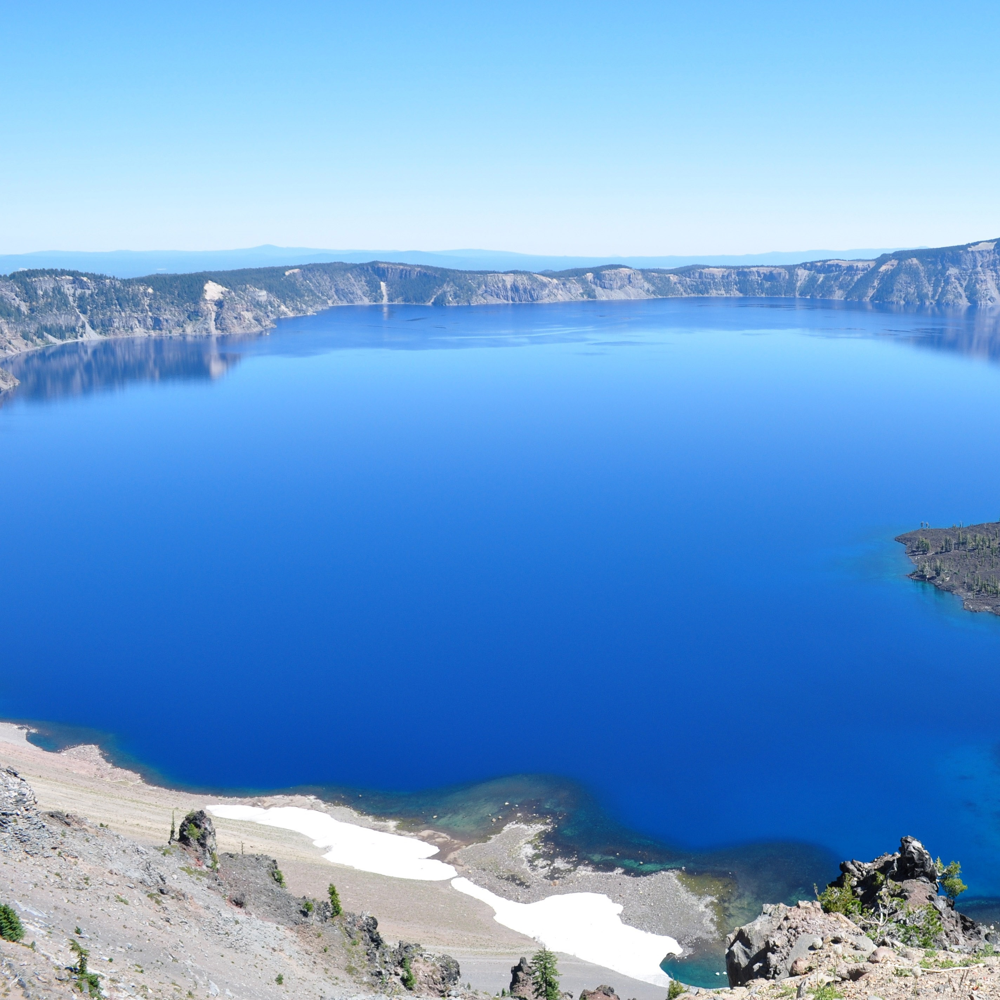

CRATER LAKE
Crater Lake Park is located in Klamath County, Oregon and is undoubtedly a sight for sore eyes. There's limitless activities and fun within the park. Come and see yourself!
SKIIING
Skiing at Crater Lake National Park is like no other! Mountaineers says We have hills ranging from The Watchman that's 8,013 feet(2442m) to Mount Scott 8,926 feet(2721m)! Open 24hrs
CAMPING
Camp and have some Crater Lake food but beware of the Polar Bears!
SNOWBOARDING
Snowboard some snow waves, we have contest every Thursday some come and show your gnarly tricks off!
SWIMMING
Go swimming in the DEEP BLUE LAKE. Crater Lake is measured to be 1,943 feet(592 meters) according to Live Science Studies so don't worry about breaking your neck from a high or deep dive!! Open 24 hrs